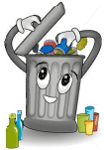
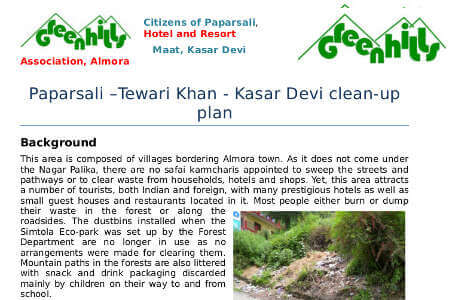

Managing your waste
Each of us can contribute to a cleaner environment and a reduction in global warming by taking the small steps described in this section and convincing our families and friends to do the same.
- Treat public spaces as we treat our homes ..
- Make it a habit to use dustbins
- If you see someone littering, approach them politely to ask them not to litter
- Apply the 3 ‘R’s – Reduce, Reuse and Recycle in your own home, office, shop or hotel.
REDUCE- When buying goods, choose the most durable even if one has to pay a little more
- Buy refills whenever possible and reuse containers
- Avoid bottled water, canned food and drinks, take-aways
- Always carry a cloth bag with you and say ‘no’ to plastic carry bags
- Use lunch boxes rather than Styrofoam or aluminium foil packaging for food that has to be taken to school or office
- For parties or wedding receptions, use plates and glasses that can be washed or use biodegradable ones (These are available on-line at ecoware.in or arecagoodplates.com or earthware.in).
- Ladies, opt for ecological menstrual products. There is a little known and cheaper alternative to disposable sanitary pads or tampons. The SheCup! Adopting it means getting rid of that monthly plastic that is an eyesore in our litter bins and dump sites and a health hazard for waste pickers and animals. Read more.
- Reuse plastic bags, aluminium foil, cheese tins, dahi containers, etc.
- Repair instead of throwing away
- Give away clothes you no longer use to Goonj.org
- At Divali time, organise sales of second-hand items at throw away prices in your neighbourhood
- Waste loses its value when mixed – segregate your waste into three
Milk packets, dahi containers, plates and cups, tins and bottles should be washed before disposal. Use a plastic bin or bucket for wet waste, a bora for recyclables that the kabadi does not buy and a used plastic or paper bag for insanitary waste. The insanitary waste bag should be tied up so that nothing falls out. Wet
(Compostable)
Vegetable and fruit peels, tea leaves, coffee grounds, left-over food, dairy products, egg shells, meat, fish, garden wasteDry
(Recyclable)
Dry (Recyclable) Plastic, paper, carton, glass pieces and bottles, shoes, iron, aluminium foil, blades, tins, bulbs, batteries, e-wasteDirty
(For incineration)
House sweepings, hair, nails, babies’ diapers, pads, bandages, tissues, medicines, laminates (plastic and aluminium stuck together like chip and pan packets), condoms, etc - Compost your wet waste – this reduces the waste you throw away by 60% and produces much needed organic matter for the soil.
If you have garden space, dig a pit and cover each layer of waste with soil. It will take three months to decompose. This will go faster if you introduce earth worms (Eisenia fetida or Eudrilus Eugeniae or Perionyx excavatus) and you will not need to turn the pile. Earthworms are sensitive to light and need to remain in a damp surrounding. So use some shredded cardboard or newspaper as bedding at the bottom of your pit, keep the pit damp by spraying water regularly and cover it with sack cloth.
If you don’t have garden space, you can opt for aerobic composting on your balcony or anaerobic composting in your kitchen using a Japanese method of pickling waste with effective microorganisms. No smell, no flies, uses just a little space (DIY Bokashi). - Getting your recyclables to a recycling facility
Ideally, your local government should organise the collection and transport of recyclables. If not, you will need to organise a parallel system in your neighbourhood. This may need monthly contributions from each household and commercial establishment to pay for collection and transport. Here’s an example of one such neighbourhood initiative. People generally respond well if they can sell the recyclable waste at a buy-back centre.